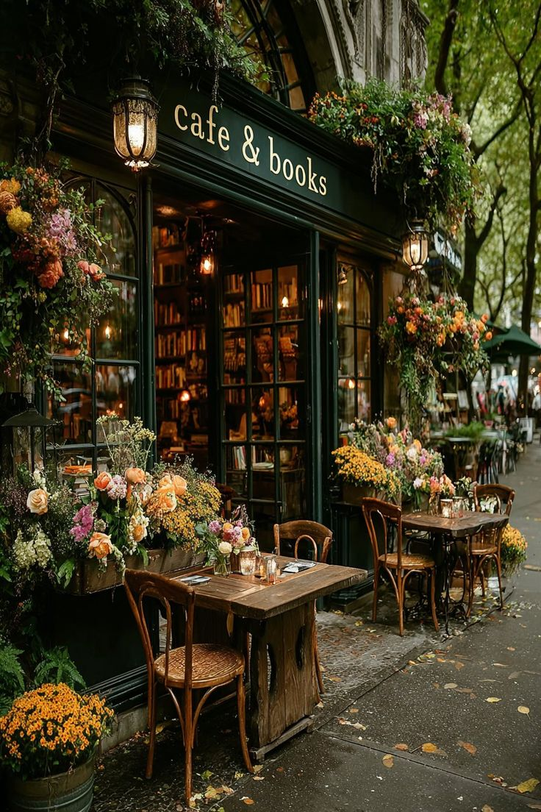

A Nossa História
Conheça a essência do conceito Mil Folhas.

Duas paixões num só espaço
A Mil Folhas nasceu do desejo de unir duas das maiores fontes de tranquilidade: a literatura e a natureza.
Acreditamos que um bom livro ganha outra dimensão quando apreciado perto de um arranjo floral fresco. O nosso espaço físico, com a sua fachada clássica e um interior acolhedor, convida a abrandar o ritmo do dia a dia e a desfrutar do momento.